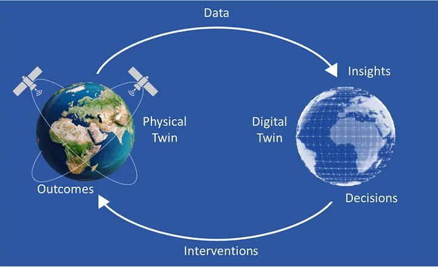
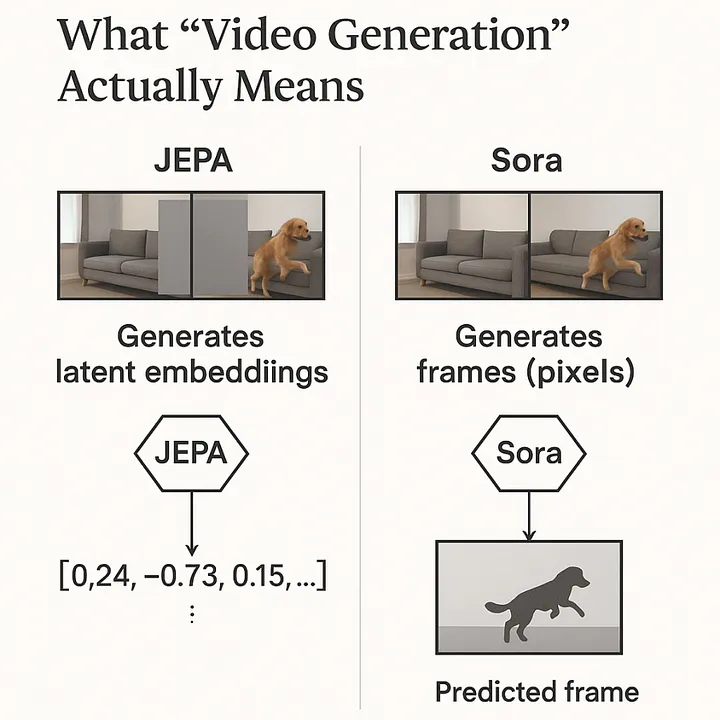
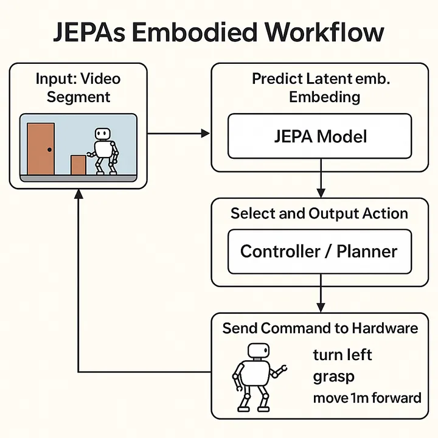
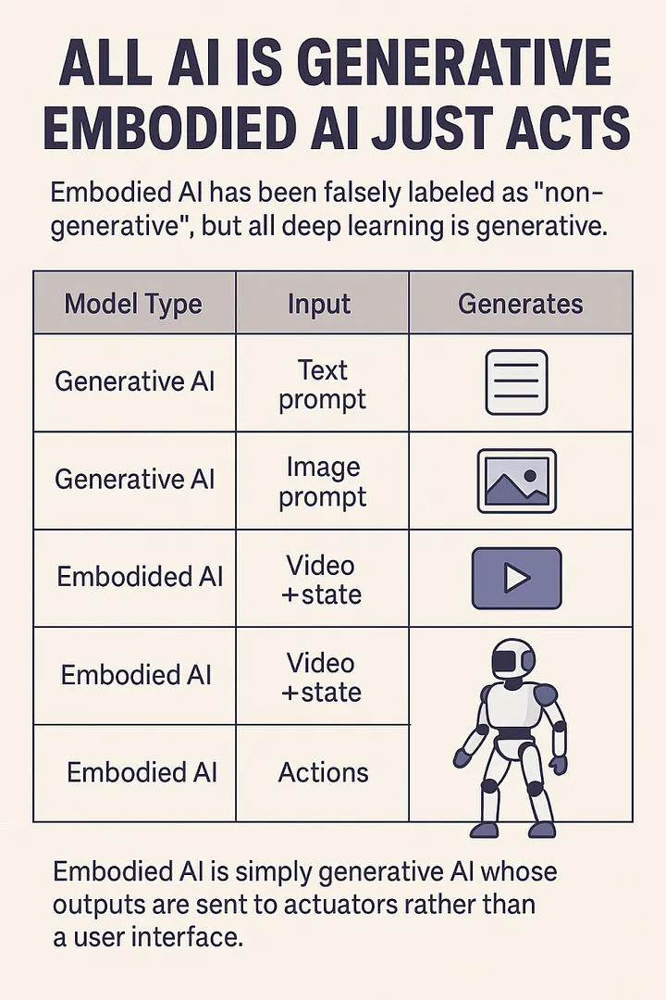

The Anatomy of JEPA: The Architecture Behind embedded Predictive Representation Learning
How Yann LeCun’s Vision for World Modeling Could Reshape Deep Learning
🌎 🌏 🌍 What Is a World Model?
A world model is an internal representation that allows an AI model to simulate, predict, and reason about its environment – without direct interaction at every step. Rather than reacting blindly to inputs, a system with a world model can “imagine” future events, understand causal relationships, and plan actions based on predicted outcomes.
At its core, a world model enables:
• Prediction: Anticipating what will happen next (e.g. if an object falls, rolls, or stops).
• Latent Understanding: Representing not just what things look like, but what they are and how they behave.
• Planning & Simulation: Performing mental rollouts to test different actions before committing to one.
• Temporal Reasoning: Understanding how events unfold over time – a critical skill for embodied AI and agents.
Think of it as the AI equivalent of “common sense” + an imagination.
⸻
🔍 Why World Models Matter in Deep Learning
Most neural networks today are reactive – they process input and produce output without an internal mental model. In contrast, a world model allows the AI to detach from input and simulate forward, generalize across time and modality, and reason abstractly.
This is essential for:
• AI powered Robotics
• Self-driving cars
• AI agents in simulated or game environments
• Generalized agents that demonstrate true physical intuition
⸻
🧠 How JEPA Fits In
JEPA (Joint Embedding Predictive Architecture) trains models to learn the latent dynamics of data – not by reconstructing it, but by predicting internal representations of masked information. This is crucial for world modeling because:
• It avoids pixel-level overfitting
• Focuses on abstract, predictive understanding
• Enables agents to learn without explicit action labels or fine-tuned supervision
In other words: JEPA teaches models to imagine what’s missing – and to do it intelligently.
LeCun describes a world model as “an abstract digital twin of reality that an AI can use to understand the world, predict the consequences of its actions, and plan accordingly. It essentially acts as a simulator of the relevant aspects of the world for the AI to interact with.”

🔍 What the Transformer Encoder Actually Does in JEPA
At the heart of JEPA lies a deep stack of Transformer encoder blocks, which operate over video as a unified signal – ts sole modality is video which it self combines vision, sound, and time. These layers extract structured patterns across all three dimensions of video.
Here’s how it works, step by step:
⸻
🔹 1. 1. Encoder (Vision Transformer / CNN variant)
• Takes raw video (or video patches)
• Converts them into latent embeddings (vectors in ℝⁿ) which are coordinates in the vector space that represent features and are grouped bawe on similar patterns
• This is where clustering and representation learning happen
- Tokenization Layer
• The video is split into spatiotemporal patches (like 3D tokens)
• Each patch becomes a token – a vector input to the model
- Positional Encoding
• Adds temporal and spatial ordering to each patch
• Tells the model where each patch comes from in the sequence
• Just like GPT does with language tokens, transformers are modality agnostic so does this with every modality
4.Multi-Headed Self-Attention (MHA)
Each attention head acts like a specialist, extracting a distinct signal from the video:
🖼️ Vision Heads:
• Color & Lighting
• Edges & Textures
• Geometric shapes
• Anatomical structure
• Visual style & animation cues
🔊 Sound Heads:
• Rhythm: Patterns of timing and emphasis (e.g., footsteps, music tempo)
• Melody: Sequential pitch patterns (e.g., speech intonation, alarms)
• Timbre: Texture of sound (e.g., metal clang vs soft thud)
• Harmonics: Rich frequency relationships in voices or environments
🕒 Temporal Heads:
• How these patterns evolve over time
• Detecting motion, continuity, cause-effect, scene changes
💡 These heads work in parallel, attending to different aspects of the same data and learning cross-modal interactions.
⸻
🔹 5.Residual Connection (Post-Attention)
The outputs of all heads are concatenated and passed forward, but not in isolation.
A residual connection wraps around the attention output:
• It adds the original input to the transformed features
• Prevents vanishing gradients
• Preserves low-level details alongside high-level abstractions
⸻
🔹 6.Layer Normalization (LayerNorm)
This layer standardizes the combined output across all features in the sample:
• Mean = 0
• Standard deviation = 1
📦 Applied per individual video embedding, not across the batch.
Why?
Because normalization makes learning stable and helps the model avoid overfitting to unusual variance in one part of the video.
GELU layers are between each dense layer(number 7) to ensure the greduents between them are passed to the next layer without loss of features as its goal is to upwards bound the gradients if its below 0
⸻
🔹 7.Feedforward Dense layers
Each token (video patch or audio segment) is passed through the same position-wise MLP:
• Dense → ReLU → Dense
• Applies non-linearity and learns deeper feature interactions
• Output = a refined feature for that slice of the video/audio/time combo
💡 The MLP doesn’t “see” the whole video – it just transforms one patch at a time. But because these layers are stacked after MHA, they benefit from global attention context.
❌ What’s Missing?
No decoder.
• No module to convert latent embeddings back to pixels
• No softmax over vocabulary
• No pixel-space rendering
• No diffusion or deconvolution stack
Because JEPA’s output is meant to be send to not by humans.
• The “video” it generates is an abstract, vector-based forecast of what’s likely to happen next
• That forecast gets passed to:
• 🚘 A self-driving car planner
• 🤖 A robotic arm’s policy head
• Not to a user interface(UI)
🔁 This Full Block Repeats ~Numerious Times
The sequence above – MHA → Residual → Norm → MLP → Residual → Norm – is repeated many times (sometimes 24, 48, or more layers deep), continually refining the video’s internal representation. State of the art models are often 90- 100+ layers deep for this reason
⸻
✅ The Final Output: A Compressed, High-Dimensional Latent
This full process produces a single embedded representation of the entire video:
• Spatial structure
• Audio rhythm and tonality
• Causal flow over time
• Scene consistency
• Physical plausibility
This latent is then passed to the context encoder and the rest of JEPA’s prediction pipeline during training – or used directly during inference for embodied decision-making.
Activation fucntion used in JEPA: GELU Activations
What GELU does:
GELU = Gaussian Error Linear Unit.
It smoothly “gates” inputs: small negative inputs are suppressed, positive inputs are passed through more freely, but not in a hard cutoff like ReLU.
This smooth gating helps gradients flow better during training, reducing the risk of dying neurons (neurons that output zero all the time) while still allowing some nonlinearity.
Conceptual difference: hard vs. soft suppression
ReLU: f(x) = max(0, x)
Hard cutoff: all negative inputs become 0.
Pros: Simple, prevents exploding negatives.
Cons: Dying neuron problem — once a neuron outputs 0, its gradient is 0, and it may never “wake up.”
SiLU / Swish: f(x) = x * sigmoid(x)
Smoothly suppresses negatives instead of zeroing them.
Small negative inputs are allowed to pass through weakly, so gradient still flows.
GELU: f(x) = x * Φ(x) (Φ = CDF of standard normal)
Probabilistic gating: the neuron passes positive inputs mostly unchanged, but negative inputs aren’t fully zeroed — they’re scaled by a probability factor.
Encourages neurons to learn patterns from slightly negative signals rather than ignoring them entirely.
Key idea: GELU and SiLU let “useful negative signals” survive and contribute to the next layer, helping the network learn more nuanced representations. ReLU throws them away.
⸻
🧠 1. Hierarchical Abstraction ( as with all deep learning models )
Think of the first layers as seeing:
• “That’s a bright red patch.”
• “That sound is a short, sharp pulse.”
• “Those two frames show a hand moving.”
Later layers can build on that:
• “The red patch is part of a cup.”
• “The pulse is a knocking sound near a surface.”
• “The motion pattern is a reaching hand preparing to grasp.”
🧠 Each block builds on the outputs of the one before, learning higher-level concepts and interactions.
⸻
🧩 2. Attention Is Dynamic
Multi-head attention doesn’t memorize connections in one pass.
• In early layers, attention heads may just find local relationships (e.g. edges, shapes, sounds).
• Deeper heads may find intermodal and temporal causality:
“The knock came just before the cup fell.”
“The shadow moved, so the light source changed.”
🎯 These are emergent, not hardcoded – they only emerge after multiple cycles of computation.
⸻
🔄 3. Residual + Norm Doesn’t Flatten or Merge – It Stabilizes
Residual connections don’t compress the signal into “one meaning.”
They preserve all features and pass forward both the original and transformed signals.
LayerNorm doesn’t finalize the representation either – it just keeps learning stable at each layer by keeping the norm and deviations manageable across deep neural networks
The model still has to learn across many steps how to combine, align, and abstract features which is why these layers are so emphasized.
⸻
⚙️ 4. Video Is Complex Across Modalities
Video isn’t static:
• Things appear, disappear, move, interact
• Sound and vision interact asynchronously
• Temporal logic unfolds gradually
That level of dynamic reasoning needs depth.
Shallow transformers might only capture short-term or surface correlations. Deep stacks capture world dynamics – essential for things like JEPA or world models.
Role of Each Repetition Description
Layer 1 – 3 Learn basic patterns (edges, motion, color, pitch)
Layer 4 – 8 Combine patterns into coherent objects, rhythms, scene elements
Layer 9 – 16+ Model interactions between objects across time
Final layers Build causal and predictive representations
🔊 Audio in SOTA AI: No Longer Standalone
In modern, state-of-the-art (SOTA) models, audio is no longer treated as a separate modality. Instead, it’s fused directly into the latent space of video models, aligned and synchronized over time.
When ML engineers or researchers. today say a model “understands video,” what they really mean is that it can process:
Visual frames (images), • Temporal structure (motion, continuity), • Audio signals (waveforms or spectrograms). Together, these form a single unified representation of video. There’s no longer an artificial split – video = vision + time + sound. This latent fusion reflects how humans experience media: not as isolated images or sounds, but as continuous multisensory flows. AI models like Veo 3 aim to replicate this same integration – processing sight, sound, and motion as one dynamic stream, which makes the modality of video the go to for video generation and embodied models. ⸻ 🎤 Standalone Audio: Now a Narrow Use Case Standalone audio models (e.g., for ASR or TTS) still exist, but they serve limited functions: • ASR (Automatic Speech Recognition): Maps waveform to text. • TTS (Text-to-Speech): Maps tokens to waveform. These are statistical mapping tasks, not comprehension. The model doesn’t “understand” speech – it learns to associate acoustic patterns with symbol sequences. There’s no reasoning, memory, or modality fusion. 🧠 JEPA’s Core Innovation: Predicting Embeddings, Not Tokens
Traditional autoregressive models (like GPT or diffusion models) attempt to directly predict observable tokens – pixels in an image, words in a sentence, or frames and audio in a video. While powerful, this forces them to model the raw data distribution, often including noise and low-level variability irrelevant to high-level understanding.
JEPA (Joint Embedding Predictive Architecture) breaks from this pattern.
Instead of predicting raw data tokens, JEPA learns to predict embeddings – dense, abstract representations that encode meaningful structure, not surface details.This is still pattern recognition but at the latent level.
This shift has two major implications:
• 📦 Abstraction Over Appearance: Rather than modeling every pixel, JEPA learns to represent the essence of the world – object permanence, physics, temporal flow – as compressed latent embeddings.
• ⚡️ Efficiency: Predicting in latent space is far more efficient and generalizable than pixel-by-pixel prediction. It also avoids wasting capacity on irrelevant low-level detail.
⸻
🧱 The Two Core Blocks: Context Encoder + Predictor
JEPA’s architecture centers on two major components:
Context Encoder • Takes in a large portion of the input (e.g. the first 80% of a video). • Produces a high-level latent embedding of what has occurred so far – capturing spatial, temporal, and semantic structure. • This embedding is not used to reconstruct input, but to build a predictive prior about what should happen next. 2. Predictor
• Receives the context embedding and learns to predict the future embedding – i.e., what the latent state of the remaining 20% (future) should be.
• Crucially, it does not see the future frames or tokens directly – only their embeddings.
• The predictor acts like a world simulator: it learns the dynamics of how the world evolves in embedding space.
Together, these two components make JEPA a predictive world model – one that doesn’t just memorize inputs, but learns the structure of time, causality, and consequence.
🧠 JEPA’s Architecture: Simpler Than It Seems
At its core, JEPA is just a specialized variant of a Transformer, with 90%+ of its layers focused purely on encoding visual data – specifically video, which is composed of:
• Vision (spatial)
• Time (temporal)
• Sound (audio)
✅ Summary (in plain terms)
JEPA is not a classic encoder-decoder.
It’s not autoregressive.
It’s also not just ViT stitched together.
Instead, it’s a new kind of transformer-based architecture built to predict what’s missing in the world using:
• Patch embedding + positional encoding
• Transformer blocks (MHA + MLP + LayerNorm + Residuals)
• Separate latent spaces for context and target
• A small prediction head
• Latent-space loss
JEPA’s Real Purpose: Embodied AI at Scale
⸻
🧠 Why It Matters
The primary primary purpose of JEPA is powering intelligent agents. Why control physical systems in physical environments – what we call embodied AI.
Unlike text models that predict the next word, or image models that fill in pixels, JEPA is trained to anticipate how the real world evolves – in motion, causality, and interaction.
It’s a model of “what happens next” – not just in raw features , but in space and time.
These systems require persistent internal world models that can:
• Track object identity
• Model cause and effect
• Understand spatial structure
• Predict physical outcomes
🧠 All Deep Learning Is Generative – JEPA Included
When people hear “generative AI,” they think of models that output text, images, or video. But at its core, every deep learning model generates something – whether it’s a sentence, a video frame, an action, or a latent representation.
JEPA is a generative model.
It generates future video embeddings – not pixels, but the compressed essence of what the world should look like next.
In this way, JEPA sits right alongside models like Sora or Veo.
They generate video at the pixel level.
JEPA generates video at the abstract level – which is often more useful for planning, control, and simulation.
✅ JEPA Is a Video Generator – But at the Latent Level
• Sora / Veo / Runway/Hailuo:
Generate videos directly – pixel by pixel or frame by frame. Their outputs are consumable by humans.
• JEPA:
Generates video representations – a sequence of compressed latent states that capture how the video evolves over time. These embeddings drive predictions, not display.
🔁 Embeddings are video – just not in raw form. They’re what models use to understand, simulate, or act on visual experience.
So yes, JEPA is a video generation model – just one that:
• Operates fully in vector space,
• Focuses on structure and dynamics over aesthetics,
• And outputs latents that control future prediction, not immediate visual display.
JEPA generates video at the abstract level – which is often more useful for planning, control, and simulation.
So:
• GPT generates words
• Sora generates video
• JEPA generates latent video
• And all of them are generative AI
✅ JEPA Generates Video – but Not in Pixel Form
JEPA generates video embeddings —
meaning: latent vectors that represent “what should be happening next” in the scene.
⸻
🔍 Contrast with Sora, Veo, Hailuo, MidJourney
🧠 Why JEPA Doesn’t Output Pixels
Because:
• It’s not trying to display anything
• It’s trying to predict what the model needs to know next
• Its job is understanding, not rendering
That’s why:
There’s no decoder – because no human needs to see it.
The next module (e.g., planner or controller) consumes the output directly.
Each vector is:
• A semantic summary of a part of the video
• Predicted by the JEPA model based on context
• Compared (during training) to the target encoder’s version of that patch
You’ll never see:
• Colors
• Motion
• Raw frames
Until/unless a decoder is trained to map those vectors back to pixels (which is not JEPA’s job).

🔁 JEPA’s Embodied Workflow (step-by-step)
Input: The robot’s camera captures a new video segment (e.g., the world just changed)
JEPA takes that video and predicts the latent embedding of what should come next
That latent represents the “expected future”
A downstream controller or planner receives that latent and:
• Compares possible actions
• Chooses the one that will most likely make the latent future real
That chosen action (e.g. turn left, move arm) is sent to the hardware
The environment changes → go back to step 1

At every step, JEPA generates a new latent. video(not frames, but future states)
That prediction becomes the goal the model tries to achieve
And the loop continues – tightly coupling prediction → action → prediction
JEPA isn’t watching the world and passively predicting —
It’s driving behavior by constantly saying:
“The world should look like this next.”
And the controller does whatever it must to make that prediction true.

🔸 Video: The Sole Modality of Embodied AI
Video isn’t just one of many modalities – it’s the core modality for embodied AI.
Why?
Because embodied AI refers to neural networks that control physical or digital devices embedded with computers – including:
• 🦾 Robots
• 🚗 Autonomous vehicles
• 🛸 Drones
• 🎮 Game agents (NPCs, AI opponents, etc.)
• 🧠 Augmented reality assistants
• 🤖 Smart home devices with movement or camera input
• 🩺 Surgical or industrial automation systems
To operate in these environments, AI must process and respond to continuous sensory input – and that’s only possible through video:
A unified stream of space + time + motion + sound.
In this sense, video is not just a medium – it is the gateway to perception and action.
Without mastery over video:
• There’s no way to simulate interaction.
• No way to perceive motion.
• No way to predict physical cause and effect.
⸻
What neural networks Could Control with the development of a deep World Model in their embedded vector space
Robotic Arms and Manipulators • Precision pick-and-place tasks in factories or warehouses Logistics (e.g. warehouse movement and object handling) • Handling fragile or irregularly shaped objects without prior training • Autonomous assembly lines adapting to new products on the fly Manufacturing (e.g. robotic arms or mobile units) Navigation (e.g. drones or delivery bots) 2. Autonomous Vehicles (Cars, Trucks, Drones)
• Real-time navigation in complex urban environments
• Predicting pedestrian and other vehicle behavior to avoid accidents
• Coordinated multi-agent driving for traffic efficiency and safety
- Aerial and Underwater Drones
• Terrain-aware exploration and mapping in challenging environments
• Dynamic obstacle avoidance in dense forests or underwater caves
• Delivery drones adjusting flight paths based on weather and airspace restrictions
- Space Robotics and Satellite Servicing
• Robotic arms on satellites repairing or upgrading external modules
• Autonomous navigation and docking in orbit or on planetary surfaces
• Manipulating objects in zero-gravity environments with high precision
- Industrial Automation and Construction Machines
• Automated bulldozers and cranes operating safely on construction sites
• Adapting to changing terrain and unexpected obstacles without human input
- Smart Home and Assistive Robots
• Household robots that interact physically with objects and people
• Coordinating multiple devices for home automation based on human behavior
- Game and Simulation NPCs
• Realistic non-player characters (NPCs) that learn and adapt physically
• Dynamic interaction with players and environments for immersive gameplay
• executing complex strategies in open-world settings
8.Agricultural Robots
• Autonomous tractors and harvesters adapting to uneven fields
• Targeted application of fertilizers and pesticides based on real-time sensing
• Crop monitoring with physical interventions to optimize growth
9.Cognitive Agents in AR/VR Environments
• Virtual avatars that perceive and respond to user actions with physicality
• Training simulations with realistic physics for pilot or medical training
• Mixed reality systems integrating physical and virtual interactions seamlessly
• Manufacturing (e.g. robotic arms or mobile units)
• Logistics (e.g. warehouse movement and object handling)
• Navigation (e.g. drones or delivery bots)
⸻
let’s walk through a full stage-by-stage breakdown of how JEPA would process a real-world embodied AI scenario during training
🧠 Use Case: A Robotic Arm Reaching for a Cup
Let’s say a JEPA-powered agent is controlling a robotic arm. The robot sees a cup placed on a table and must reach out and grab it.
⸻
⚙️ JEPA Stage-by-Stage Breakdown (Embodied AI Example)
⸻
🔹 Stage 1: Input Perception (80% Observation Window)
Input:
• Video frames from the robot’s camera (vision)
• Synchronized microphone input (sound of surrounding environment)
• Time-ordered sequence (frame 1 → 80)
These are not tokenized like in NLP – instead, they’re processed as patches (for images/frames) and spectrogram segments (for sound).
⸻
🔹 Stage 2: Embedding via Transformer Blocks
Each frame and audio segment is broken into patches →
Each patch is processed through stacked layers of:
- Multi-Head Self-Attention (MHA)
• Captures spatial and temporal relationships
• Learns how different parts of the scene relate across time
- LayerNorm → Feedforward MLP → LayerNorm
• MLP = Dense → ReLU → Dense
• Applies position-wise transformations
- Residual Connections
• Preserve learned information through depth
At its core, JEPA is just a specialized variant of a Transformer, with 90%+ of its layers focused purely on encoding video which is composed of:
• Vision (spatial)
• Time (temporal)
• Sound (audio)
• multi headed attention → Residual → LayerNorm → dense layers → Residual → LayerNorm (repeated in this order many times), producing a latent representation of the full video (space + time + sound).
• These layers extract deep patterns from the input: motion, causality, spatial structure, sound, light, colors etc.
⸻
🔹 Stage 3: Context Encoder (80%)
• Only the first 80% of the video( vision+ time+ sound)is used by the context encoder.
• It summarizes the evolving dynamics:
📦 Object positions
🕓 Motion patterns
🧠 Environmental context (e.g., sound cues, lighting)
🧠 Output: A compressed context latent embedding that represents “what’s happening so far.”
⸻
🔹 Stage 4: Target Encoder (20%)
• Separately, the final 20% of the video (e.g., frames 81 – 100) is passed through the same transformer layers.
• This generates a target latent: what actually happened in the final part of the sequence (e.g., the hand grabbing the cup).
This target is not visible to the predictor during inference( non training)
After the context encoder produces an embedding from the first 80% of the sequence (e.g., video), and the target encoder encodes the true latent of the last 20%, the predictor’s job is to guess what that missing 20% looks like purely from the context.
⸻
🔹 Stage 5: Prediction via MLP( dense layers)
The context latent is passed into a Predictor MLP:
Dense → ReLU → Dense → (dropout layer or layer normalization ) this continues for many layers until the video prediction is complete
Goal: Predict the target latent purely from what came before.
📤 Output: Predicted latent for frames 81 – 100
(it’s the model’s best guess about how the world should evolve)
🔄 The Process
• The input to the predictor is the latent produced by the context encoder.
• The predictor MLP processes it through:
A dense layer to project or transform the latent vector.
A nonlinear activation (usually ReLU or GELU) to add complexity and nonlinearity.
Another dense layer to refine the representation.
• This output is a predicted latent vector – meant to match the true latent encoding from the target encoder (the actual future/missing part).
So predict the last 20% of the video from the initial 80% it has access too
in JEPA:
• The predictor is a stack of dense → ReLU → dense layers (MLP)-RELU repeated many times
• It transforms the context latent into a predicted latent for the future.
• This is compared to the actual target latent, and the model learns by minimizing their difference.
🎯 Training (Loss)
• JEPA doesn’t compare pixels or tokens – it compares the predicted latent to the actual target latent using a contrastive loss or embedding distance loss (e.g., cosine similarity or L2 loss).
• The goal is to minimize the difference between the predicted and true latent, so the predictor learns to simulate what should logically come next in the se
⸻
🔹 Stage 6: Loss Calculation
During training:
• The predicted latent is compared to the actual target latent.
• Loss function = contrastive loss or L2 distance between the two.
• This teaches the model to anticipate plausible physical outcomes.
⸻
🔹 Stage 7: Embodied Decision
In practice, the model now predicts the likely latent future:
• Where the cup will be
• What trajectory the arm must follow
• How the scene will evolve if it reaches forward
These latent predictions are then passed to a control module, which can:
• Plan the robotic arm’s next motor actions
• Adjust for external factors (e.g., slight object movement or background noise)
• Feed predictions into an action policy for execution
⸻
✅ Final Output
Output:
• Robotic arm executes a reaching motion based on predicted future state.
• JEPA’s predicted latent dynamics enable anticipation of where the cup will be and how to move toward it realistically.
⸻
After training ( infrence ) the model will use its predicted video embeddings to model the world allowing it to predict, plan,
🧠 Why This Matters
• Transformers like GPT just predict tokens.
• JEPA predicts how reality unfolds – in latent space.
R• That makes it ideal for embodied agents where perception → reasoning → action must flow in real time.
⸻
Important Note on Training vs. Inference
During training, JEPA uses the 80/20 split between the context encoder and target encoder to teach the predictor to anticipate the future latent states. However, during inference (actual use), the entire input sequence is passed through the context encoder alone, and the predictor generates the future embedding(video) based solely on that context. The 80/20 split is strictly a training mechanism to help the model learn predictive capability – it is not applied when the model is making real-world predictions.
JEPA is trained to model the world by predicting future high-level embeddings based on what it has already seen.
⸻
Another Example: Drone Flight Over a City or Forest
Imagine a drone is flying over a vast city or forest. You give JEPA the first 80% of the flight footage – the model sees buildings, roads, traffic flow, or in a forest: tree density, terrain types, lighting, wind noise, etc.
Then you ask:
“What does the final 20% of this sequence likely look like?”
JEPA’s job isn’t to guess pixels – it predicts the latent embedding that represents the continuation of the environment’s structure and dynamics, like:
• How the skyline might evolve
• If the forest clears into a valley
• Changes in motion or audio cues
• The spatial layout ahead, based on patterns so far
🚫 Myth: “Embodied AI” = Intelligence lives inside the robot
✅ Reality: Embodied AI = Cloud-based neural networks controlling hardware remotely
⸻
🔌 What’s Actually Happening:
• embodied AI systems (robot arms, self-driving cars, drones, etc.) are not running intelligence on-device.
• Instead, a deep neural network – often large and too resource-intensive for edge devices – is trained and hosted in a data center or on a central processing unit.
• These models send commands to the robot (perception → plan → action) in a feedback loop, but the reasoning stays digital, not physical.
⸻
🤖 Why This Breaks the “You need a body to think” idea
- The intelligence isn’t embodied – just the output.
• The robot body is just an actuator.
• The thinking, learning, reasoning, planning? All in the cloud, all in software.
• This is fundamentally disembodied cognition.
- Digital cognition scales. Biological cognition doesn’t.
• You can train on millions of hours of simulation.
• You can fork hundreds of agents, backpropagate across them, evolve them over massive datasets.
• Biology can’t do that. It’s bottlenecked by biology.
- Modularity & abstraction:
• You can swap the body. The same neural policy can control a drone, a bipedal walker, or a robot arm with fine-tuning. That’s not human-like at all. That’s modular digital intelligence.
⸻
⚡️ The Real Point:
Embodiment is a training signal, not a requirement for general intelligence.
• Yes, video + action loops (like those used in robotics simulators) can help train better models – but that doesn’t mean the model “needs” a body to think.
• The model just needs temporally aligned data: vision + proprioception + rewards.
• Once it learns the dynamics, it’s just a controller.
This is how JEPA acts as a world model: by learning to anticipate high-level dynamics and guide action in environments it’s never explicitly seen before – whether flying a drone, driving a car, or operating a robot.
📊 Performance Claims & Why It’s Not Over Yet
Meta claims that V-JEPA 2 outperforms other self-supervised baselines across several world model benchmarks, including:
• CO3D (3D-aware video prediction)
• Ego4D (first-person embodied video)
• Kinetics (action classification)
• Epic-Kitchens (egocentric activity modeling)
In their own words:
“JEPA 2 achieves a new state-of-the-art on the CO3D and Epic-Kitchens world model benchmarks and shows strong generalization.”
– Meta AI
You can read the full article here
These results suggest that embedding-prediction-based world models are a powerful direction – capable of capturing temporal and spatial dynamics without needing full autoregressive token generation.
⸻
🛑 But We’re Not There Yet
While JEPA’s reported numbers are promising, we should be clear:
analysis:
⸻
🔍 What JEPA Actually Does (In Simple Steps)
Takes in input (video, image stream, or multi-frame input).
Processes it into embeddings using its encoder.
Compares these embeddings to a learned internal latent space (a compressed representation of expected future sequences).
Generates video of the predicted future embeddings – not pixels or frames like Midjourney or Veo 3 – as the output.
These latent video predictions are then decoded or interpreted by systems (e.g. a robot control module) to trigger or guide behavior.
⸻
🧠 What It Doesn’t Do
• ❌ Understand physics, causality, or context.
• ❌ Reason from first principles.
• ❌ Construct internal scientific models of reality.
• ❌ Generalize to truly novel environments or edge cases outside the training distribution.
• ❌ Explain why it made a certain prediction.
Instead:
It matches patterns across time in embedding space and guesses what happens next.
It is a generative model, but it generates compressed latent video predictions – not token sequences, not RGB pixels.
⸻
🧩 Meta’s Framing Problem
Meta is intellectually dishonest (or at best, extremely imprecise) when it markets JEPA as “understanding the world.” What it’s actually doing is:
❝ Predicting high-dimensional future embeddings from a temporal input stream using self-supervised contrastive learning. ❞
Calling that “understanding” is like calling autocomplete “writing poetry.”
Benchmark scores ≠ embodied intelligence.
The true test of a world model is not whether it performs well on curated datasets – it’s whether it can control agents in real, messy environments with uncertain inputs, feedback loops, and dynamic goals.
Until we see a model like JEPA:
• Control a robotic hand to tie a knot,
. . Level 4 -5 autonomy in cars, drones, trucks etc
• Navigate a crowded urban environment and shifting physical dynamics autonomously,
• Or direct multi-agent collaboration in open-ended tasks…
…we’re still in the early stages.
⸻
🧭 Final Thought
JEPA is not the final word – it’s a strong signal.
Its architecture gives us a new way to think about intelligence: not just predicting pixels or tokens, but predicting how the world will evolve in latent space.
But we’ll only know its true power when those latent predictions start guiding real-world actions – reliably, robustly, and safely.